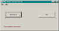

Shut down the Tymeac Server,
com.tymeac.client.jframe.TyShutdown
This frame class requests a shut down of the Tymeac Server.
The non-frame version of this class is TyShutdownClient, below.
 (click to link to full image)
Buttons
Shut Down -- Press to request a shut down of the Tymeac Server.
Kill -- Press to request a forced shut down of the Tymeac Server.
Message Block at bottom : -- This is an information message:
Tymeac SD(0000) -- The request completed successfully. The remainder of the
message is release dependent but always contains the Tymeac Server MilliTime (start up
time in milliseconds.)
Tymeac SD(2010) -- "Shutdown forced past active threads, awaiting
termination." This is the same as return code 0000 except there were active threads
and a force shutdown was requested.
Tymeac SD(2020) -- The request did not complete successfully. Some Threads
are still active. The remainder of the message is release dependent but always
includes the number of Threads remaining.
Tymeac SD(2030) -- "Prior shutdown completed normal, awaiting
termination". The server request processing function terminated. A subsequent request
was made for shutdown. The request was ignored. If the shut down thread was not part of
the Server then the Server only ends when the main JVM ends.
Having a way of shutting down automatically, without a frame class, is useful.
This requires using the shutRequest(boolean force) Method of the Tymeac Server
Communication Class, TySvrComm. This is demonstrated in
the sample Class, com.tymeac.demo.TymeacClient_Shutdown
On the command line enter the Class. The Console displays the result, as above.
Run this Class at least twice.
com.tymeac.client.TyShutdownClient (JavaDoc)
This is the Non-GUI equivalent of the GUI Class, above. An example of how to use this
class is: com.tymeac.demo.TyDemoClient_ShutDownClient.java in the
<TymeacHome>source/com/tymeac/demo directory.
Constructor 1 -- has no arguments. This is for the RMI Server. The constructor gets a
new instance of a Tymeac internal class that is similar to TySvrComm
Constructor 2-- is for the internal server. The single argument is the Tymeac
Server Interface, TymeacInterface.
Instance Methods --
public String shut() {
Returns a String, as above.
Parameters: None
public String kill() {
Returns a String, as above.
Parameters: None
This is to force a shut down. See the shut down document
for a full explanation.
| {kind=link}